Chapter 6. Giant Bananas and Two-headed Astronauts - Part 1 of 3


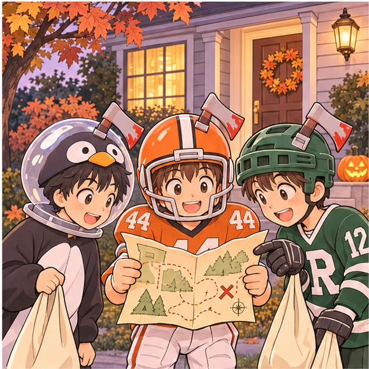
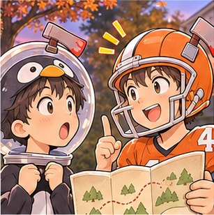
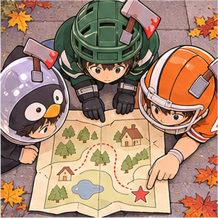

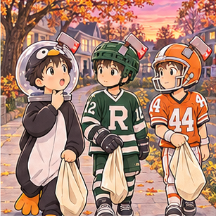


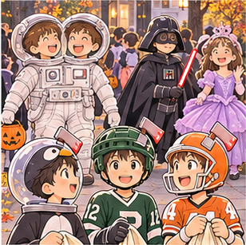
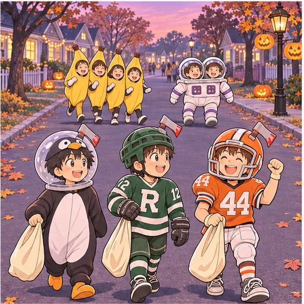
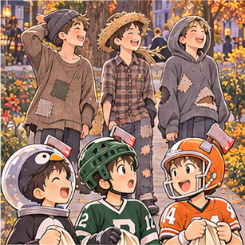
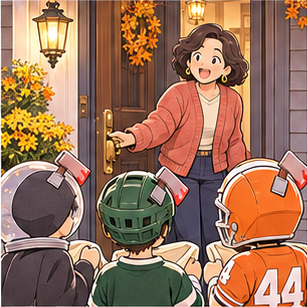
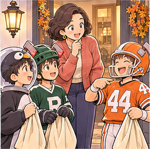
Chapter 6. Giant Bananas and Two-headed Astronauts - Part 2 of 3

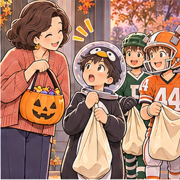
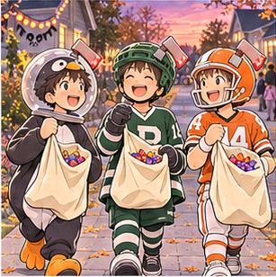
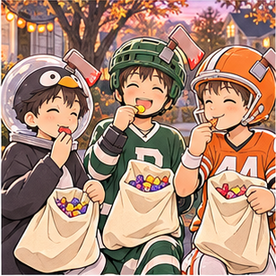

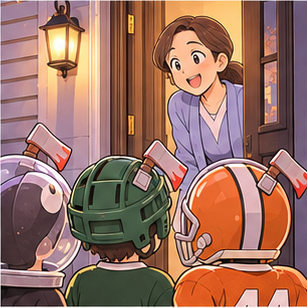

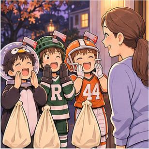


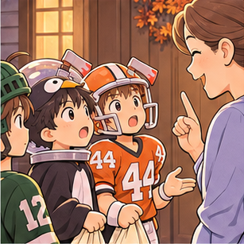
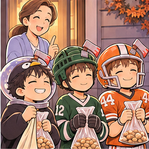
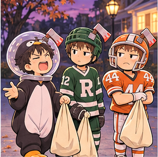
Chapter 6. Giant Bananas and Two-headed Astronauts - Part 3 of 3
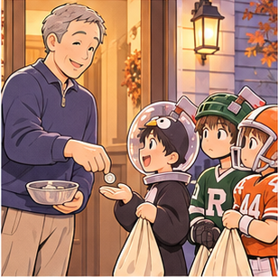
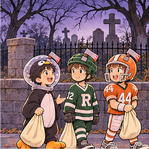

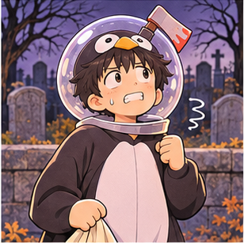


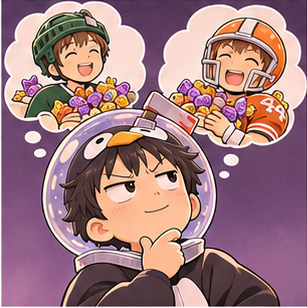
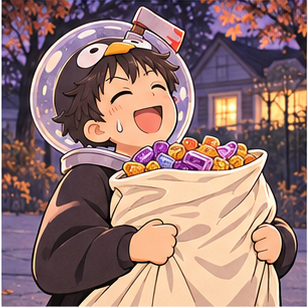


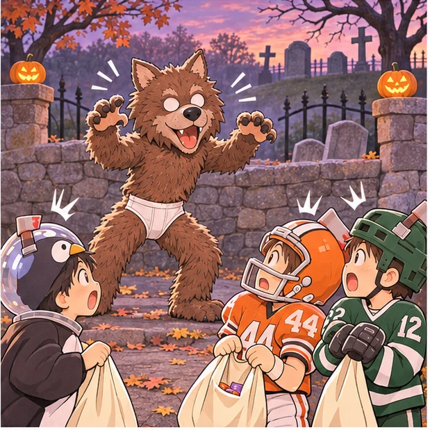
Chapter 7. The Halloween Monster! - Part 1 of 1
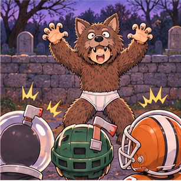
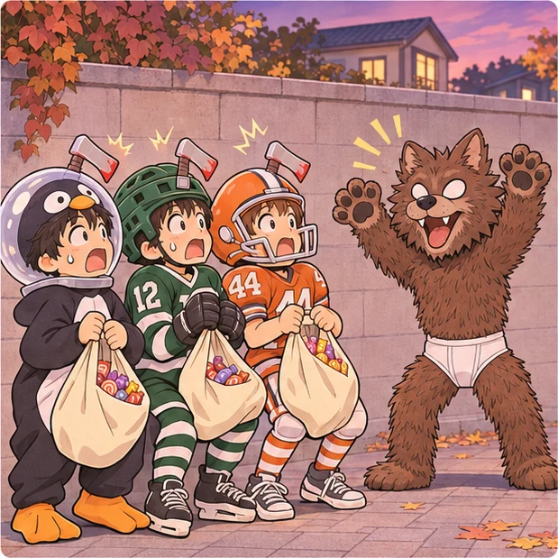
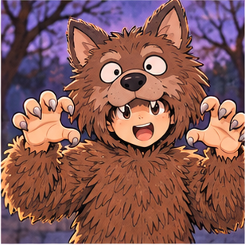
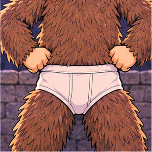

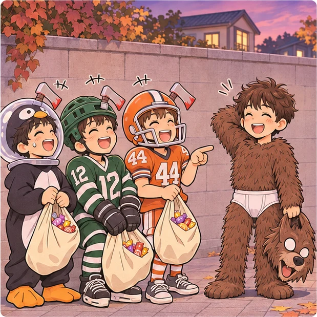


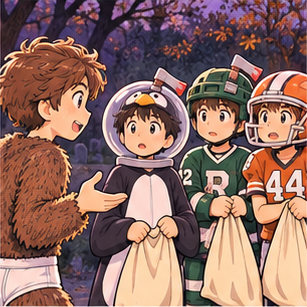

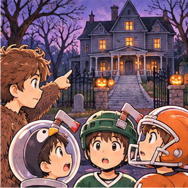
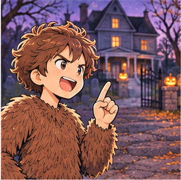
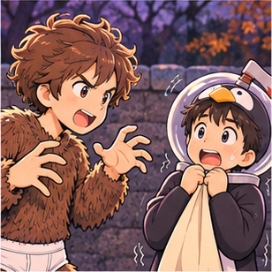


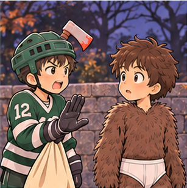
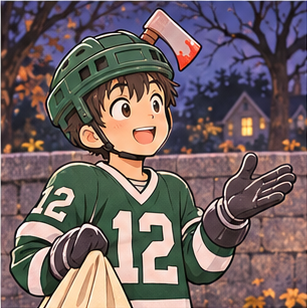

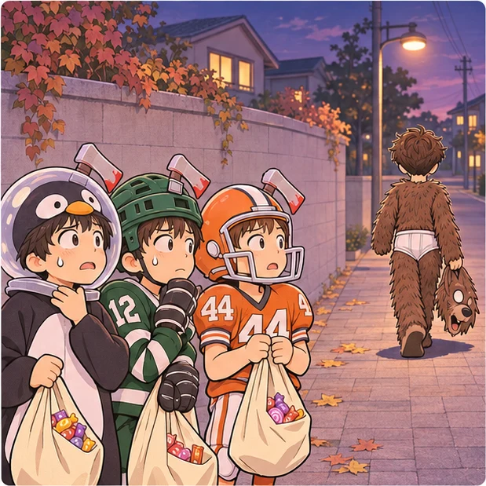
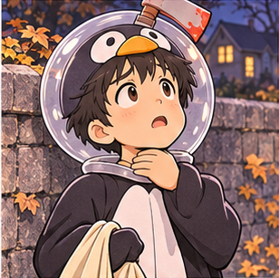
Chapter 8. The Most Horrible, Dreadful, Disgusting, Repulsive Creature That Ever Walked the Earth - Part 1 of 1
"Maybe we should go home now," I told Michael and Ryan. "We have candy."
"Go home?" Michael said. "Are you crazy? We haven't been to Mrs. Patty's house yet. She has more candy than anyone in town." "But what if she chops our heads off?" I asked. "Stuff like that happens all the time, you know."


"She's not going to chop our heads off," Ryan said. "Your friend Billy doesn't know what he's talking about."

"Yeah," Michael said, "and Mrs. Patty told us over and over again that we have to trick-or-treat at her house. She might chop off our heads if we don't show up."

Good point. Michael really should be in the program.
We kept walking down the street. It was dark now, and . I was looking all around, just in case the real Halloween Monster jumped out from behind a wall. "Do you think Mrs. Patty's headless husband, Marvin, still lives with her?" I asked the guys.


"Ghosts have to live somewhere," Michael said. "They're just like people, except they're dead."
"I feel sorry for ghosts," said Ryan. "They're like homeless dead people."

We turned the corner onto Norman Road, where Mrs. Patty lives. That's when I saw the most , , , that ever walked the Earth.

It was Andrea Young! She was with her little friend Emily, and they were dressed in their girly . Emily's mom must have that dumb queen outfit together again.

"What are you two doing here?" I asked.
"We're trick-or-treating, dumbhead," Andrea said. "Just like you."

Andrea and Emily said they were heading for Mrs. Patty's house. I didn't want to walk with them, but it did feel safer with five of us walking together.
Finally we got to 176 Norman Road. It was a big house. It looked really old, like one of those houses in the movies. There was an on the outside and some dead trees by the .


"Wow!" Andrea said. "I didn't know school secretaries lived in mansions."
When we got closer, we through the gate and saw Mrs. Patty's Halloween . There were sticking out of the lawn. A foot was of a window. There were with evil faces, spiders hanging from strings, and cats with eyes that lit up. Smoke was coming out of a big pot. Spooky music was coming out of speakers. There was a sitting on a chair on the front porch. (I hope it was a , anyway. If that thing moved, I decided, I was going to make a run for it.)


"This place is ," said Emily.
Andrea . "Mrs. Patty sure when it comes to Hallo—"
But she didn't get to finish her sentence, because suddenly the front gate open. Nobody even touched it or anything.

"Come inside. . . ," said a weird man's voice. "If you . . . ."
Chapter 9. Mrs. Patty's Weird House - Part 1 of 2
"Who said that?" Michael asked after we heard the weird man's voice. "Headless Marvin?"
"It wasn't a person," Ryan said. "It was one of those computer voices."
"Let's get out of here," said Emily, "before it's too late!" She sounded like she was about to cry, as usual. I wanted to cry too, but I didn't want to look like a baby.
"I—I'm not scared," I said.
"M-me neither," said Michael.
We went through the gate and climbed the front steps. You could hardly see anything. Even though I was walking on my , the stairs with every step.
I was trying to find the when I walked into some . They were all over my face. Yuck! Then I put my foot in something. It was stuck! I couldn't get it out!
"Aaaah!" I screamed, my foot. "You stepped in a pumpkin head, dork," said Andrea.
"I knew that," I said, finally my foot free.

Any time somebody tells you that you did something dumb, always act like you did it . That's the first rule of being a kid.
Ryan rang the . It played music. I was hoping that nobody would be home, but soon we heard footsteps and the front door slowly open. I .
It was Mrs. Patty. She was still dressed in her witch costume. At least she didn't have an ax. "Aha," she said in a voice, "my last group of trick-or-treaters is finally here."
"I love your Halloween , Mrs. Patty," said Andrea, who never misses a chance to a grown-up.
"What ?" Mrs. Patty said. "My house always looks like this."
I was really sweating now.
"We better go," I said. "It's way past our bedtimes."
"Isn't there something you want to say first?" asked Mrs. Patty.
"Yeah," I said, "how does that stay on your nose?" "You're supposed to say ','" said Mrs. Patty.
"Oh," we all said, "." "Before I give you candy," she said, "you must pass a test."
"No, that's not how it goes," said Michael. "All we have to do is say '' and you give us candy. Then we leave. That's the way it's supposed to work."
"Not here," said Mrs. Patty. "Do you want the candy or not?" "Okay, okay," Ryan said, "what's the test?"
"If you go trick-or-treating," said Mrs. Patty, "and they give out Twix bars at ten houses and Nestlé Crunch bars at five houses and Baby Ruth bars at seven houses, how many candy bars will you have ?"

Chapter 9. Mrs. Patty's Weird House - Part 2 of 2
Hey, that was totally not fair! Mrs. Patty was trying to turn trick-or-treating into math class. All day long we have to learn reading and writing and math. My brain is tired after school. I shouldn't have to do more schoolwork. Mrs. Patty isn't even a math teacher. She's a secretary! "Twenty-two," Andrea answered right away. "You'll have twenty-two candy bars ." "That is correct," Mrs. Patty said as she turned around. "Come in. The candy is down in the ." Down in the ? Why couldn't she just keep a bowl of candy in the front like normal people? Mrs. Patty is batty! I didn't want to go down in Mrs. Patty's . I didn't want to see her husband's head in a down there. It figured that Andrea had to be so good at math. If it weren't for her, we could have left. Mrs. Patty opened a door and told us to go down the steps. It was dark. I could hardly see anything except some on the walls with candles inside them. When we got to the bottom, we had to walk through a . There were doors going off in different directions. I didn't see any candy anywhere. We weren't sure which way to go. "We're lost!" Andrea said. "Ouch!" Emily said. "I hit my head on something." "Let's turn around and make a run for it," I said, "before it's too late." "I'm scared," Michael said. "I think I'm going to pee in my pants," said Ryan. "If I die," Andrea told Emily, "you can have my candy." "You are a true friend," said Emily. "You can have my candy if I die." I wished they would both die! I didn't even care if I got their candy or not. We came to the end of the . There was a door. A sign on the door said, "Candy in Here." I put my hand on the . "Don't open that door!" Michael said, just as I was about to turn the . "Why not?" I asked. "In horror movies," Michael explained, "whenever somebody opens a door, a crazy guy wearing a out with an ax or something." "Don't be silly," Ryan said. "Open the door, A.J. We'll get the candy and get out of here." I looked at Ryan. Emily looked at Andrea. Michael looked at me. I didn't know what to say. I didn't know what to do. I had to think fast. So I turned the . Do you want to know what was behind the door? Well, I'm not going to tell you. "Okay, okay, I'll tell you. But you have to read the next chapter, so nah-nah-nah boo-boo on you."


Chapter 10. Marvin the Headless Mummy - Part 1 of 2
Behind the door was a big, dark room, and it was full of kids. I couldn't see much, but I recognized Neil the nude kid, and Annette, and some other kids from our class. They were just sitting there, like they were waiting for us.
It was weird. In the middle of the room was a big . It was like one of those trunks that used to hide their .
Michael asked, "What's in the—"
But he never got the chance to finish his sentence, because suddenly the top of the started to lift up. A *hand* was pushing it open! And then this *thing* got out.
It was a . . . with all over its body! But the weird thing was that the didn't have a head! Well, it *had* a head, but the head wasn't on top of its where it was supposed to be. The was holding its head in its hand like a football! "Eeeeeeeeeeeek!" screamed Emily.

"It's Marvin!" I shouted. "Mrs. Patty's dead husband! His came to life!" "He's the Halloween Monster!" yelled Ryan.
"We're gonna die!" Michael screamed.
"I *told* you we should have made a run for it!" I shouted.
"Bwa-ha-ha-ha!" said Marvin's head. I had no idea how it was able to talk, but it did. It said, "Give me your candy! Put everything in the , or else."
That head didn't have to ask me twice. I ran over and all the candy from my into the . So did Ryan and Michael and Andrea and Emily and Neil the nude kid and Annette. I guess that made *all* the kids turn over their candy, because there were about a million hundred candy bars in the .
"Bwa-ha-ha-ha!" said Marvin's head as Marvin danced around the . "It's mine! All mine! Now I have more candy than anyone in town! My life is complete! Bwa-ha-ha-ha!"
"That's what *you* think!"
We all turned to see who said that. A big guy stepped out of the at the other end of the room. He had a on his head and a in his hand.
It was Mr. Klutz, our school principal!
"It is I," he said, pointing his at Marvin the . "King Louis the Fourteenth. In the name of France, that candy!"

"Over my dead body!" Marvin said. (That was really weird. Everybody knows mummies are dead bodies to begin with.)
Chapter 10. Marvin the Headless Mummy - Part 2 of 2
Marvin grabbed a off the wall with the hand he wasn't using to hold his own head. Then he and Mr. Klutz started fighting, just like in the movies. It was cool.

"Get him, Mr. Klutz!" we all shouted. "Kill the Halloween Monster!"
Mr. Klutz and Marvin were dancing around, swinging their swords at each other. "Off with your head!" Mr. Klutz said, taking a wild swing.
"His head is already off!" somebody yelled.
"Oh," Mr. Klutz said. "Let him eat cake!"
The fight was really exciting. Finally, after a million hundred minutes, Mr. Klutz knocked the out of the Halloween Monster's hand.
"Please have ," Marvin said as he .
"!" Mr. Klutz said. "Don't ever steal candy from the children of Ella Mentry School again!"
"I'll get you, my pretty," said the Halloween Monster as it ran up the stairs, "and your little dog, too."
"I don't even have a dog," said Mr. Klutz.
After the Halloween Monster ran away, Mrs. Patty came downstairs.
"Hooray for Mr. Klutz!" she yelled. We all started cheering.
"I have the Halloween Monster!" said Mr. Klutz . . . I mean, Louis the Fourteenth.
"We should !" said Mrs. Patty. "Let's have a candy party!"
"Yeah!" we all yelled.
Mr. Klutz and Mrs. Patty the chest and all the candy on the floor. We were allowed to eat whatever we wanted and take the rest home. I ate so much candy, I thought I was going to . It was the greatest night of my life. After eating all that candy, I couldn't for a million hundred hours. I just lay there in bed thinking about all the cool stuff that happened.

Maybe Mrs. Patty does keep her Halloween up all year round. Maybe her husband, Marvin, really is dead. Maybe she did chop his head off and turn him into a . Maybe that's why he's so mad and he has to run around the house holding his own head. Maybe now that he lost the fight to Mr. Klutz, he'll be nicer and stop taking kids' candy. Maybe Marvin and Mrs. Patty will get back together and just be normal people again, even though one of them is dead. And maybe Mrs. Patty will be able to get that off her nose.
But it won't be easy!